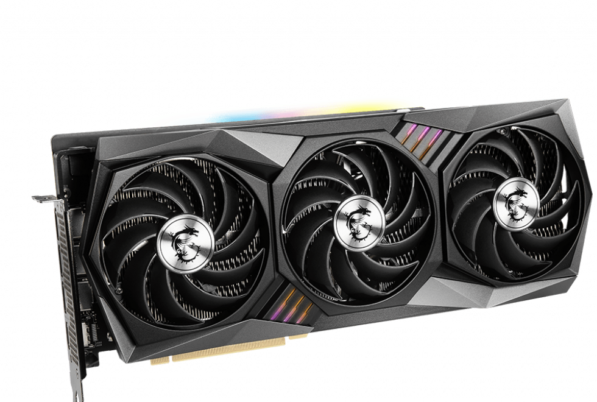

Главная
Каталог
Контакты
MSI RTX 3090 GAMING X TRIO 24G

Описание товара
Используя графический процессор с микроархитектурой NVIDIA Ampere, представляющей второе поколение чипов GeForce RTX™, видеокарта GeForce RTX™ 3090 готова обеспечить беспрецедентную игровую производительность за счет улучшенных вычислительных блоков и супербыстрой памяти GDDR6X, объем которой составляет фантастические 24 ГБ!
Характеристики товара
- Boost-частота, Частота памяти TBD MHz TBD Gbps24GB GDDR6X DisplayPort x 3, HDMI x 1
- Вентиляторы TORX Fan 4.0: спаренные лопасти создают повышенное воздушное давление.
- Тепловые трубки: сделаны таким образом, чтобы максимально увеличить площадь контакта с графическим чипом и равномерно распределить тепло по всей длине радиатора.
- Технология Airflow Control: управление воздушным потоком с целью повышения эффективности охлаждения.
- Гибкая настройка цвета и визуальных эффектов, синхронизация с подсветкой других совместимых устройств – с единым управлением из эксклюзивного приложения от MSI.
- Эксклюзивное приложение Dragon Center позволяет осуществлять мониторинг и настраивать параметры устройств MSI в режиме реального времени.
Подробное описание товара
Самое свежее воплощение культовой серии Gaming от MSI – это все то же сочетание высокой скорости, эффективного охлаждения и безупречной эстетики, которое давно полюбилось увлеченным геймерам. Такая видеокарта позволит запускать новейшие игры, оставаясь холодной и тихой – именно так, как вам хочется.
Все права защищены ©